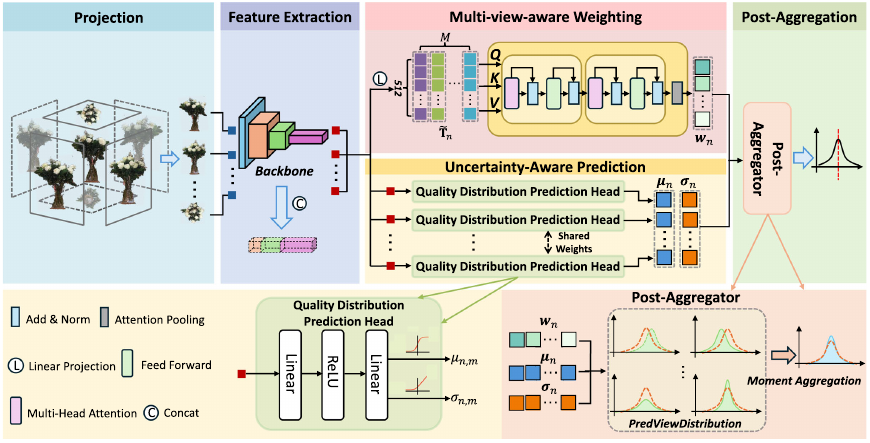

TVC

Uncertainty-aware multi-view post-aggregation for point cloud quality assessment
Yonggang Xu, Furong Pan, Yangwei Li, Xiaochuan Wang*
The Visual Computer, 2026
论文链接Code · 待补充
@article{wang_tvc,
title = {Uncertainty-aware multi-view post-aggregation for point cloud quality assessment},
author = {Xu, Yonggang and Pan, Furong and Li, Yangwei and Wang, Xiaochuan},
journal = {The Visual Computer},
year = {2026},
doi = {10.1007/s00371-026-04625-5},
volume = {42},
pages = {379}
}